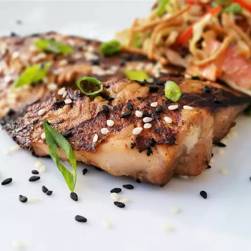

Sesame Grilled Salmon

Description
Delicious grilled salmon recipe
Ingredients
- Soy Sauce
- Honey
- Ginger
- Garlic
- Salmon Fillets
- Sesame Oil
- Sesame Seeds
Directions
- Whisk soy sauce, honey, ginger, and garlic together in a bowl until marinade is evenly mixed. Set aside 1/4 of the marinade.
- Place salmon fillets in a shallow dish; pour the remaining marinade over the salmon. Cover dish with plastic wrap and refrigerate for 5 minutes.
- Heat sesame oil in a large skillet over medium-high heat.
- Remove salmon from marinade, shaking to remove excess marinade, and place, skin-side up, into the hot oil; cook for 4 minutes. Discard unused marinade in the shallow dish. Flip salmon and drizzle the reserved marinade over salmon; sprinkle with sesame seeds.
- Cook until fish flakes easily with a fork, 5 to 7 minutes. Flip salmon, remove skin, and cook 1 minute more.
Recipe and picture from allrecipes.com
Return to Main Page